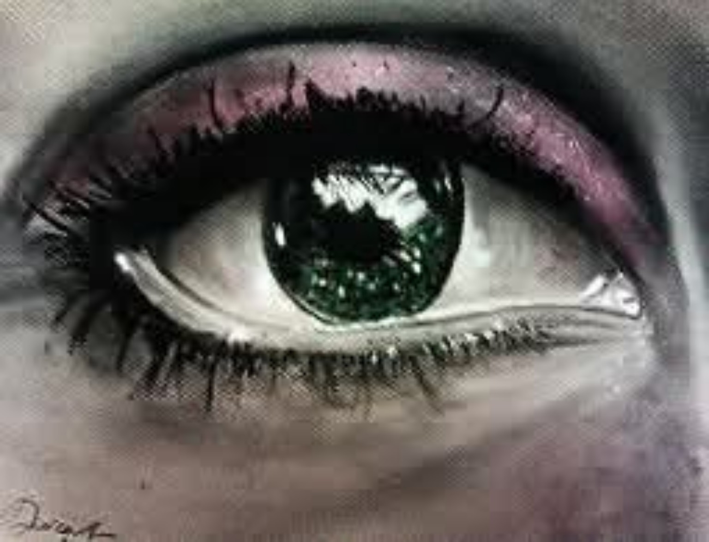

Imaginaire
Livia
Livia est un portrait où le regard devient le centre de la composition. Dans son œil se reflètent des montagnes au loin. Que regarde-t-elle ? Et le vert de son œil n'est-il pas, lui aussi, un reflet ?
Demander des informations →← Retour à la galerie